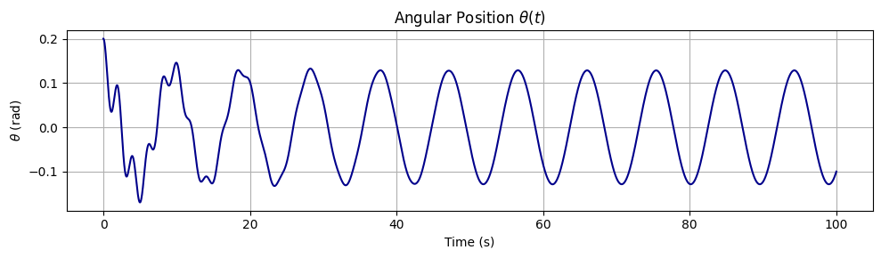
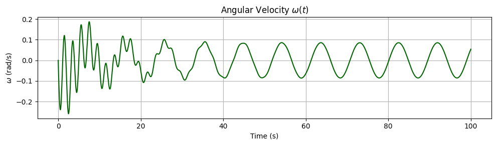
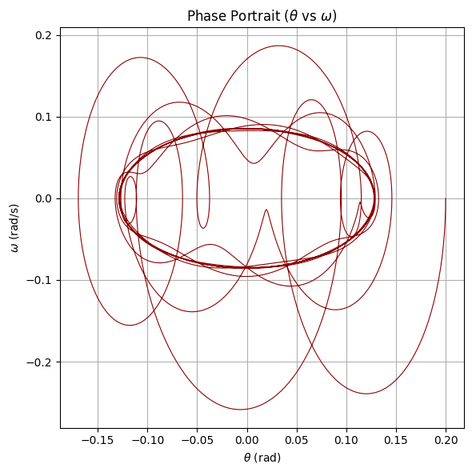
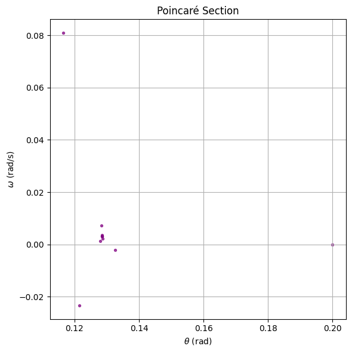
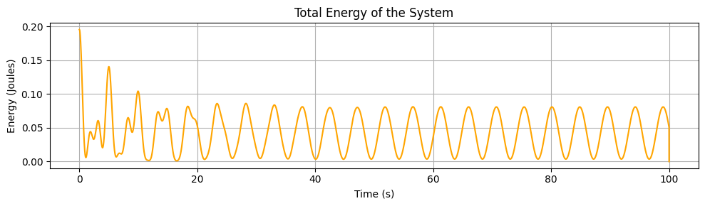
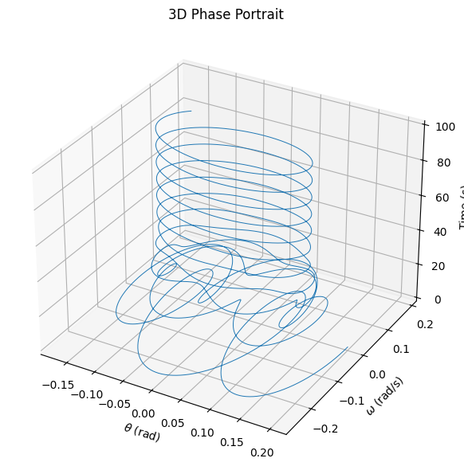

import numpy as np import matplotlib.pyplot as plt
Common parameters
g = 9.81 # gravity L = 1.0 # length dt = 0.01 T = 50 steps = int(T/dt) t = np.linspace(0, T, steps)
Initial conditions
theta0 = 0.2 omega0 = 0
def d2theta_dt2(theta, omega_dot, t, b, A, omega_drive): return -b * omega_dot - (g/L) * np.sin(theta) + A * np.cos(omega_drive * t)
def run_simulation(b, A, omega_drive): theta = np.zeros(steps) omega_dot = np.zeros(steps) theta[0] = theta0 omega_dot[0] = omega0
for i in range(steps-1):
k1_omega = dt * d2theta_dt2(theta[i], omega_dot[i], t[i], b, A, omega_drive)
k1_theta = dt * omega_dot[i]
k2_omega = dt * d2theta_dt2(theta[i] + 0.5*k1_theta, omega_dot[i] + 0.5*k1_omega, t[i] + 0.5*dt, b, A, omega_drive)
k2_theta = dt * (omega_dot[i] + 0.5*k1_omega)
k3_omega = dt * d2theta_dt2(theta[i] + 0.5*k2_theta, omega_dot[i] + 0.5*k2_omega, t[i] + 0.5*dt, b, A, omega_drive)
k3_theta = dt * (omega_dot[i] + 0.5*k2_omega)
k4_omega = dt * d2theta_dt2(theta[i] + k3_theta, omega_dot[i] + k3_omega, t[i] + dt, b, A, omega_drive)
k4_theta = dt * (omega_dot[i] + k3_omega)
omega_dot[i+1] = omega_dot[i] + (1/6)*(k1_omega + 2*k2_omega + 2*k3_omega + k4_omega)
theta[i+1] = theta[i] + (1/6)*(k1_theta + 2*k2_theta + 2*k3_theta + k4_theta)
return theta, omega_dot
-------------------------------
4 SCENARIOS
-------------------------------
scenarios = { "Pure Pendulum (no damping, no forcing)": {'b': 0, 'A': 0, 'omega_drive': 0}, "Damped Pendulum (b>0, A=0)": {'b': 0.2, 'A': 0, 'omega_drive': 0}, "Forced Pendulum (b=0, A>0)": {'b': 0, 'A': 1.2, 'omega_drive': 2/3}, "Damped + Forced (resonance-ish)": {'b': 0.2, 'A': 1.2, 'omega_drive': 2/3}, }
--- Plotting ---
fig1, axs1 = plt.subplots(2, 2, figsize=(14, 8)) fig2, axs2 = plt.subplots(2, 2, figsize=(14, 8))
axs1 = axs1.flatten() axs2 = axs2.flatten()
for idx, (title, params) in enumerate(scenarios.items()): theta, omega_dot = run_simulation(params['b'], params['A'], params['omega_drive'])
# Plot 1: Angle vs Time
axs1[idx].plot(t, theta)
axs1[idx].set_title(title)
axs1[idx].set_xlabel('Time (s)')
axs1[idx].set_ylabel('Angle (rad)')
axs1[idx].grid(True)
# Plot 2: Phase Diagram (theta vs omega_dot)
axs2[idx].plot(theta, omega_dot)
axs2[idx].set_title(title)
axs2[idx].set_xlabel('Angle (rad)')
axs2[idx].set_ylabel('Angular Velocity (rad/s)')
axs2[idx].grid(True)
fig1.suptitle('Angle vs Time for Different Scenarios', fontsize=16) fig2.suptitle('Phase Diagrams (θ vs ω) for Different Scenarios', fontsize=16)
plt.tight_layout(rect=[0, 0, 1, 0.95]) plt.show()
```
      https://colab.research.google.com/drive/1w2VFAx_vHqH_MjsYttkpVH8_P_HGvs81?usp=sharing